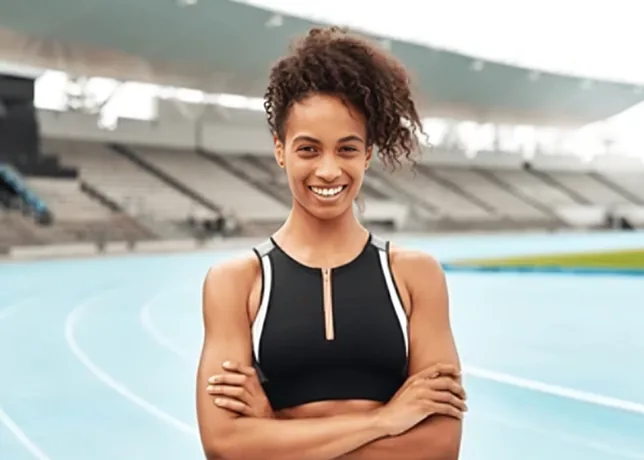

01
Curated, not sold to us.
Every brand we carry has been tested, worn and trusted by our team. If it doesn't perform on a Bengaluru monsoon long run, it doesn't make the shelf.
Home / About
We opened Paceline in 2015 with one goal — to build the running shop we'd always wanted. A decade in, we're still hand-picking every shoe, every layer and every accessory for runners just like us.
01 · Why we exist
If your aim is 5K or 26.2 miles, on road or trail, we're here to prepare, empower and equip you — from your first training run through to race-day. Our tried-and-tested range covers road, trail, track and field, apparel and accessories, with zero compromise on performance or style.
Paceline is small and independent, but the community around it is anything but. We run our own weekly club, host free gait analysis, and partner with local charities so 20% of profits from kids' kit go to Girls Run India.
Whatever mile you're on, we want to be your stop. Come say hello.
— Rae & Jamie, Founders
02 · What we stand for
01
Every brand we carry has been tested, worn and trusted by our team. If it doesn't perform on a Bengaluru monsoon long run, it doesn't make the shelf.
02
Free gait analysis, weekly run clubs, and race-day support. Come in for shoes, stay for the miles. Ask for Rae — she'll get you laced up right.
03
From how we lay out the store to how we pack an order — the small stuff matters. We spend a decade sweating the details so your run is smoother.
03 · Ten seasons in
2015
Rae opens a 40 sqm shop on MG Road with 8 shoe brands and a lot of hope.
2018
Free gait analysis and injury consults every Saturday — open to all abilities.
2022
Every Wednesday, rain or shine. Started with 6 people, now routinely over 80.
2026
Twenty seasons, still hand-picking every product. Same shop, bigger heart.
04 · Come say hi
05 · Meet the founders

10x sub-4 marathonerFounder & Head Buyer
A former GB triathlete turned shopkeeper, Rae hand-picks every shoe on the wall and still runs the Wednesday club — sub-3 marathoner, twelve times over.
Co-Founder & Coach
Sports physio and coach with two decades in the sport, Runs our free Saturday clinic, coaches the club, and knows more about your gait than you do.
Early access to new drops, race-day tips, and 10% off your first order.